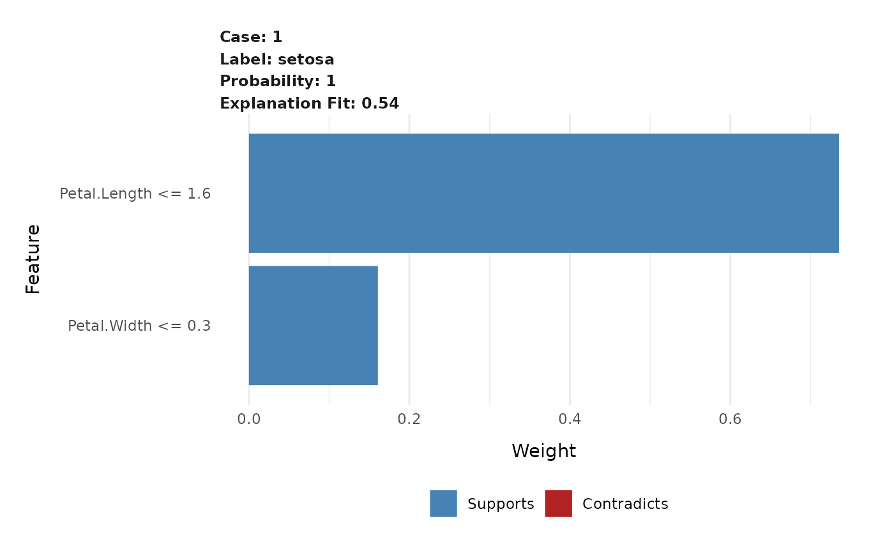

This functions creates a compact visual representation of the explanations for each case and label combination in an explanation. Each extracted feature is shown with its weight, thus giving the importance of the feature in the label prediction.
plot_features(explanation, ncol = 2, cases = NULL)
| explanation | A |
|---|---|
| ncol | The number of columns in the facetted plot |
| cases | An optional vector with case names to plot. |
A ggplot object
Other explanation plots: plot_explanations,
plot_text_explanations
# Create some explanations library(MASS) iris_test <- iris[1, 1:4] iris_train <- iris[-1, 1:4] iris_lab <- iris[[5]][-1] model <- lda(iris_train, iris_lab) explanation <- lime(iris_train, model) explanations <- explain(iris_test, explanation, n_labels = 1, n_features = 2) # Get an overview with the standard plot plot_features(explanations)